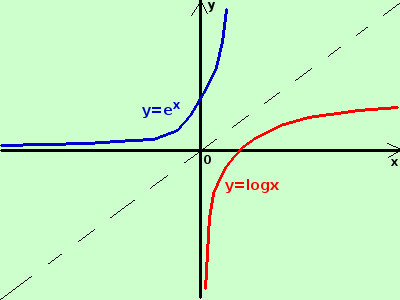

|
sviluppo Data la seguente funzione determinatene, se possibile, la funzione inversa indicandone anche le eventuali restrizioni nel dominio y = log x La funzione e' definita per x > 0 D = {x ∈ ℜ / x > 0 } si tratta della curva logaritmica  per trovarne l'inversa scambio tra loro x ed y x = log y porto i termini con la y prima dell'uguale - log y = - x cambio di segno log y = log x per ricavare la y elevo all'asponenziale da entrambe le parti dell'uguale elogy = ex esponenziale e logaritmo si elidono ed ottengo y = ex il suo dominio e' tutto ℜ D = {x ∈ ℜ} |